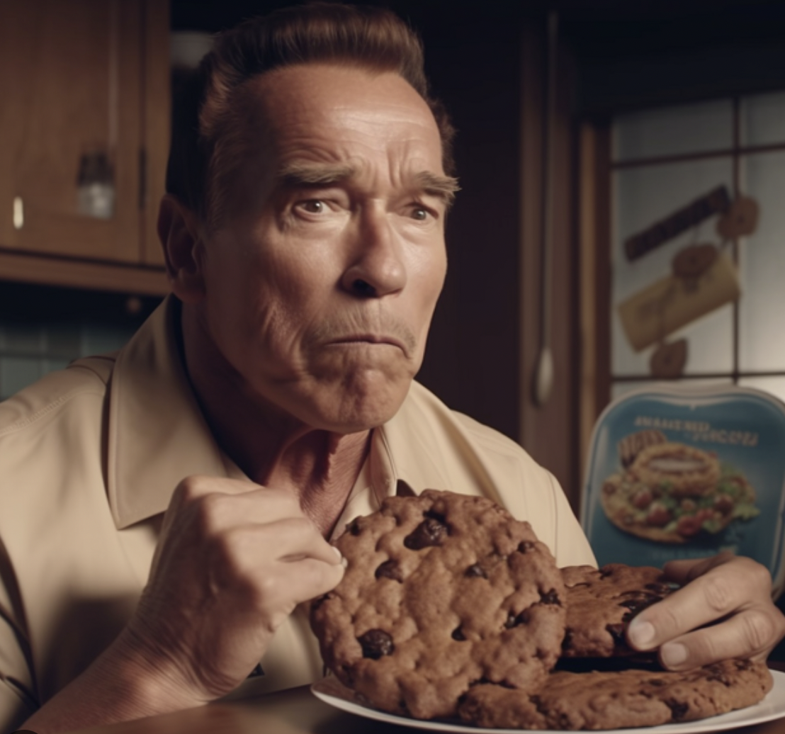

Even the best of us need a treat now and then, and what better way to treat yourself than some freshly baked cookies. In this recipe we will create the perfect cookie even the cookie monster himself would be proud of

Recipe
Preheat oven to 350°F (175°C)
In a mixing bowl, cream together 1 cup of softened butter and 1 cup of granulated sugar
Add 2 large eggs and 1 teaspoon of vanilla extract to the bowl. Mix until well combined
In a separate bowl, whisk together 2 and 3/4 cups of all-purpose flour, 1 teaspoon of baking soda, and 1/2 teaspoon of salt
Gradually add the dry ingredients to the wet ingredients, mixing until a dough forms.
If desired, stir in 1 to 2 cups of chocolate chips or other mix-ins, such as nuts or dried fruit.
Drop rounded spoonfuls of dough onto a baking sheet lined with parchment paper.
Bake for 8 to 10 minutes, or until the edges are lightly golden.
Remove from the oven and let the cookies cool on the baking sheet for a few minutes before transferring them to a wire rack to cool completely.
Simple and delicios! You have now made a batch of arnies personal favourite, but now for our final step best follow the words of the great man himself!